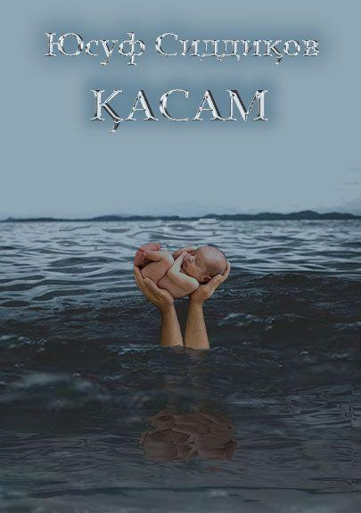

Қасам
БИРИНЧИ ҚИСМ
МИНОРАЙИ КАЛОН ПОЙИДА ИЧИЛГАН ҚАСАМ
I боб. ТАЖОВУЗ
Октябр инқилоби байрами тантаналарига бағишланган параддан сўнг мактаб ўқувчилари,техникум ва институтларнинг кўпсонли студентлари, муаллимлар ва профессор-ўқитувчилар,корхона-ташкилотларнинг ишчи-хизматчилари параддан чиқибоқ яна жонажон пахтазор қўйнига қайтишди.Бу манзара 1941 йил 7 ноябрда парадда қатнашган совет қўшинларининг Қизил майдондан тўппа-тўғри фронтга жўнатилганига ўхшаб кетарди.Бу мамлакатда пахта йиғимидан муҳимроқ иш йўқдек, бир кун пахта терилмаса Ер ўз ўқи атрофидан чиқиб кетадигандек эди гўё.
Ниҳоят декабр охирларида қалин қор ёғиб берди.Шундан сўнггина ҳашарчиларга жавоб тегди. Студентларга қисқа муддатли –уч кунлик ҳордиқ бериладиган бўлди...